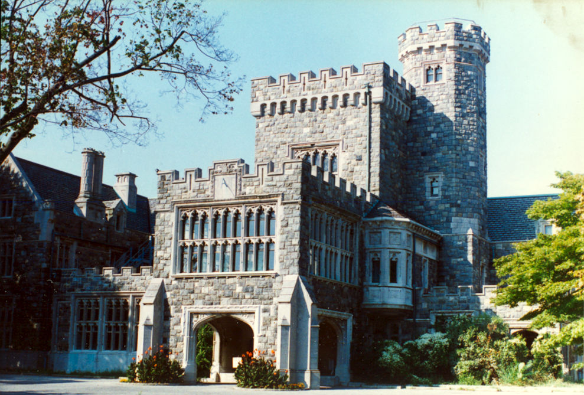
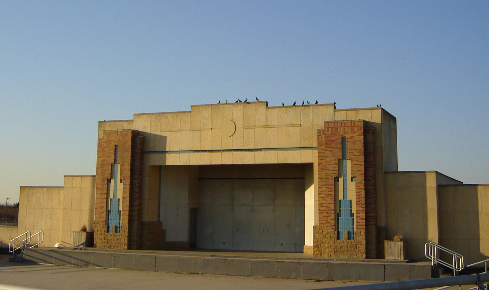
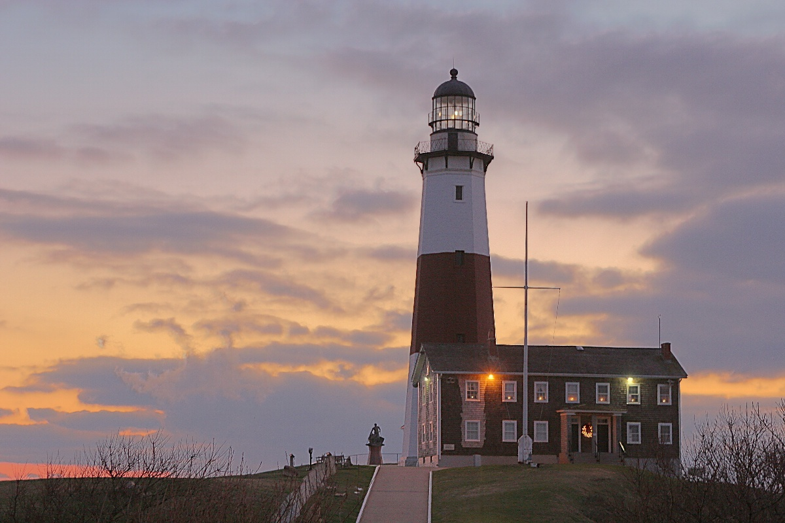

选择你的路线
每条路线可单独成行，也可组合成完整周末。根据你的兴趣与驾驶距离灵活搭配。
金色海岸四大庄园
从曼哈顿出发，一上午穿越四座镀金时代庄园——古根海姆家族的悬崖城堡、查理二世风格的郁金香花廊、127间房的法式巨宅、俯瞰海湾的西班牙复兴宫殿。这是全美密度最高的镀金时代庄园群，四月下旬正值花园巅峰，每一站都值得驻足。


午餐建议
Oheka Castle 城堡咖啡厅可在导览后直接用餐（人均 $25-35）；Old Westbury Gardens 内的 Cafe in the Woods 提供轻食简餐（人均 $10-18），适合逛完花园后休息片刻。
旅行者评价
North Fork 酒乡之路
庄园游毕，沿 LIE 东行至 Riverhead，进入 North Fork 的田园世界。路边农场摊位飘来水果派香气，Route 25 两侧酒庄星罗棋布，托斯卡纳风格的 Raphael 和经典的 Bedell Cellars 各有千秋。终点 Greenport 是维多利亚风格的港口小镇，Front Street 的晚餐为一天画上完美句号。


Greenport 晚餐推荐
The Frisky Oyster（27 Front St，创意海鲜，人均 $55-80）是北叉最有口碑的餐厅；Noah's（136 Front St，小盘+生蚝，人均 $50-80）环境亲密；Claudio's（111 Main St，百年老店，人均 $40-70）码头露台看日落。
旅行者评价
双渡轮穿岛 & 长岛东端
从 Greenport 出发，两段渡轮穿越 Shelter Island——鱼鹰在头顶盘旋，白尾鹿在路边漫步。登陆 South Fork 后，Sag Harbor 的捕鲸时代街区、East Hampton 全美十佳的 Coopers Beach、Montauk 灯塔的悬崖全景依次展开。这是长岛最富戏剧性的一天——从宁静海岛到壮阔天涯。
午餐推荐（East Hampton / Amagansett）
La Fondita（74 Montauk Hwy Amagansett，墨西哥卷饼，人均 $15-25）便宜好吃；Hampton Chutney Co.（107 Newtown Ln，印度 Dosa，人均 $12-17）性价比最高；Bostwick's Chowder House（277 Pantigo Rd，龙虾卷 $34）是本地经典。